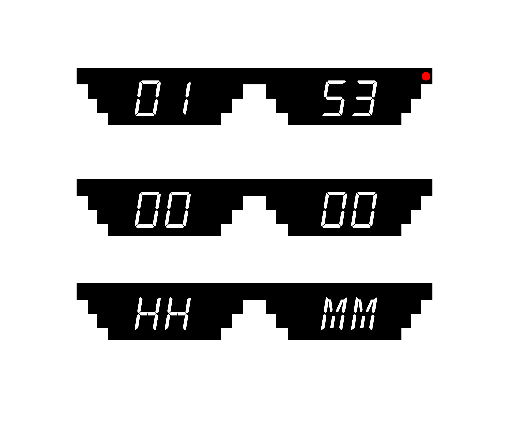

-
Role: Ux designer
-
Year: 2018
-
Task: Research, design and prototype
Sleep is crucial for the body’s recovery and overall function. Adults need about 8.5 hours of sleep each night, with 6 hours being the absolute minimum for your body to function normaly, though many are unaware of this. Lack of sufficient sleep can lead to difficulties in concentration and increased risks of depression, heart disease, and obesity. Unfortunately, many people do not get enough sleep. Research by Gerard Kerkhof, a professor at the University of Amsterdam, revealed that people in the Netherlands sleep an average of 7 hours per night. Additionally, one-third of the population sleeps less than 6 hours a night, and 33 percent report having trouble sleeping more than three times a week. But how do we motivate children to sleep in a time where digital products are all around us?


How do we help children manage screentime?
Changing the behavior of an 8-year-old is not easy, especially if it involves a hobby they really love, like gaming. With the Game Changer, we aim to reward children when they manage their time well. Lets paint a narrative.
It's 7:30 PM, and your 8-year-old, Alex, is absorbed in their favorite video game. Bedtime is at 8:00 PM, and you’ve already given a 15-minute warning that gaming time is almost over. However, as the clock ticks closer to bedtime, Alex becomes more resistant to the idea of shutting down the game.
Let the child have 'control'
A big design challenge for us was how to change the child's behavior in a positive way. We ourselves like playing games, and we understand that breaking the flow can lead to unwanted behavior. Our first thought was to make a timer. With a timer, the child has something that can't be argued with, but we knew a timer alone is not enough. So, we decided to add some game aspects to the product.
The parent will decide the amount of time that the child is allowed to play, but the child can decide when to stop. If there is time left over, the remaining time will be collected and can be redeemed later. This way, the child can learn to manage screen time and use the saved time on a later date when they have more free time.
Controls
To control the device, we were limited to a few buttons and one screen, so we decided on a playful design by giving the chicken some glasses for the screen and the beak as a button that could be turned and pressed.